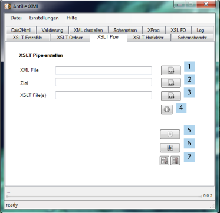

Mit dieser Funktion soll die Möglichkeit gegeben werden, eine Verarbeitungsschleife zu
realisieren. So kann eine normale Transformation durchgeführt werden, um das daraus erzeugte
Resultat wiederum mit einem weiteren XSLT File zu transformieren. Das hieraus entstandene File
kann nun erneut gegen eine weitere XSLT Datei transformiert werden. Der zugrunde liegende Gedanke
hierbei ist, diesen Prozess, wenn gewünscht, beliebig oft weiterzuführen.

Um eine Pipeline entsprechend aufzubauen müssen zunächst ein initiales XML-Dokument(1), ein Ziel(2) und ein erstes Stylesheet(3) ausgewählt werden. Über den "Stylesheet hinzufügen" Button (4) können weitere Teilschritte hinzugefügt werden. Weiterhin können die im Stylesheet hinterlegten Parameter(6) verarbeitet oder neue hinzugefügt werden. Mit dem "Ausführen" Button(5) wird die Transformation gestartet. Der Aufbau kann durch die entsprechenden laden oder speichern (7) Buttons jederzeit verwaltet werden.